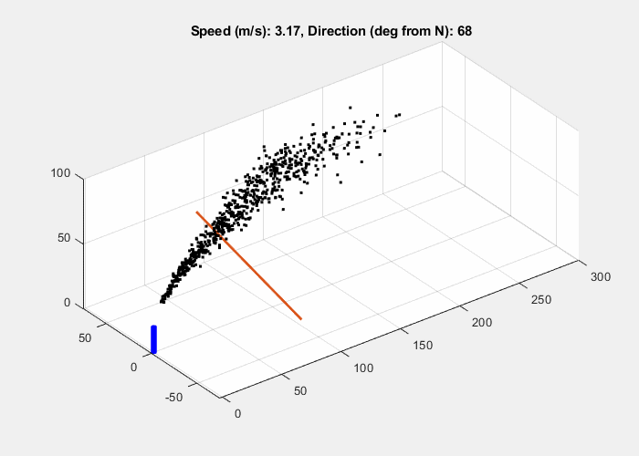

RESEARCH
Projects
Selected research projects spanning glaciology, marine geophysics, cryosphere science, and atmospheric sensing.

Borehole fiber-optic sensing on Isunnguata Sermia
Using borehole DAS and multi-instrument observations to investigate englacial hydrology, seismicity, and glacier dynamics.

Multi-span sensing on the OOI Regional Cabled Array
Imaging ocean-bottom sediment structure from ambient seismic wavefields on submarine fiber offshore Oregon.

Modeling debris-rich ice with Icepack
Combining radar, ICESat-2, and glacier-flow modeling to investigate englacial and basal structure.

Real-time plume tracking with DIAL
Modeling atmospheric plume geometry and uncertainty for greenhouse-gas emission measurements.